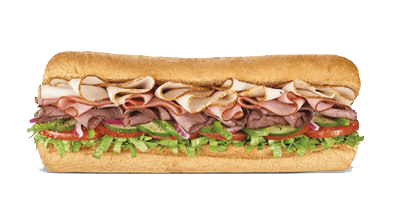

Veel mensen onderschatten het, maar gezonde voeding is een essentieel deel van het leven. Enkel op junkfood of andere ongezonde levensmiddelen leven heeft altijd een negatief effect.
Maar er is veel debat over wat gezonde voeding nou eigenlijk inhoudt. De zogenaamde 'schijf van vijf' deelt voeding op in 5 delen.
Hoeveel van elk we daadwerkelijk nodig hebben, en wat de beste opties zijn voor elke categorie is waar veel van het debat over gaat.
Waar de meeste mensen het over eens zijn, echter, is dat variatie belangrijk is. Dus ook als 1 combinatie de 'ideale' vorm van voeding zou zijn, zouden andere opties nog steeds relevant zijn.
|
|
|

|
| Categorie | Voorbeelden | ||||
| Groente | Tomaat | Wortel | Aubergine | Asperge | Spinazie |
| Fruit | Appel | Peer | Banaan | Aardbij | Perzik |
| Vlees | Kip | Rund | Varken | Wild | Eend |
| Overig | Brood | Aardappel | Pasta | Koek | Koffie |